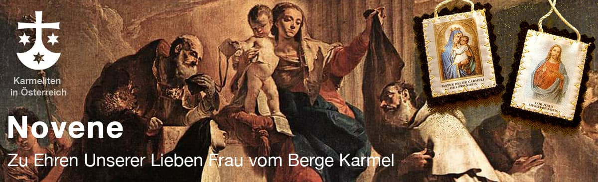

Das Skapulier des Karmel
Novene zu Maria vom Berge Karmel
7.- 15. Juli: Täglich Impulse zum Gebet auf das Fest am 16. Juli hin. Sie können hier für die Skapuliernovene abbonieren:
Kurz erklärt
Das Skapulier kurz erklärt
Das Skapulier ist ein Zeichen der Marienverehrung und erinnert daran, Jesus an der Hand Mariens nachzufolgen. Es geht auf das Ordensgewand des Karmel zurück und wird bis heute als Ausdruck einer geistlichen Verbundenheit mit Maria und der Spiritualität des Karmel getragen.
Auch für Nicht-Ordensleute gibt es eine kleinere Form des Skapuliers mit derselben Bedeutung. Wer das Skapulier empfangen oder mehr darüber erfahren möchte, findet dazu beim Skapulierfest in Wien und Linz eine gute Gelegenheit.